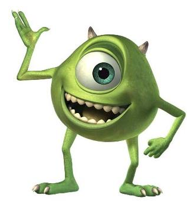

Michael "Mike" Wazowski
The man who saved a billion lives

Mike is a one-eyed green monster with a round body and two small horns. He also has claws, but they are way more sharp than Sulley's.
Here's a story of Micheal Wazowski
In Monsters, Inc. and Monsters University, Mike is depicted as a proud monster. Mike had a lonesome childhood and struggled to make friends. On a class field trip to Monsters, Inc., Mike was inspired to become a scarer professionally, but other students made fun of him because he was perceived as undeniably "unscary".
Even so, Mike was accepted into Monsters University's scare program, where he was introduced to James P. Sullivan in a SCARE 101 class. Mike initially disliked Sulley for his arrogance and bad work ethic. This dislike escalated into a major disruption made in class which resulted in Mike and Sulley's expulsion from the scare program. Mike then works out a deal with the dean of the school to re-enroll in the program on the stipulation that he wins the Games. Sulley joins Mike, despite Mike’s protestations.
Mike and Sulley joined the Oozma Kappa fraternity at Monsters University to qualify for the Games. Mike and Sulley begin to build a friendship as they compete together. During the final event, Sulley cheats, and both Mike and Sulley are expelled from school. After being expelled, the two were offered jobs as workers in the Monsters, Inc. mailroom nonetheless. They advance through the ranks until Sully is a scarer and Mike is his assistant. In Monsters, Inc., Mike runs Sulley's station on the scare floor and they are close friends and roommates. Mike is dating Celia Mae at this time. Additionally, Mike helps Sulley in his mission to save Boo.
If you have time, you should read more about this incredible monster being on his Wikipedia entry.